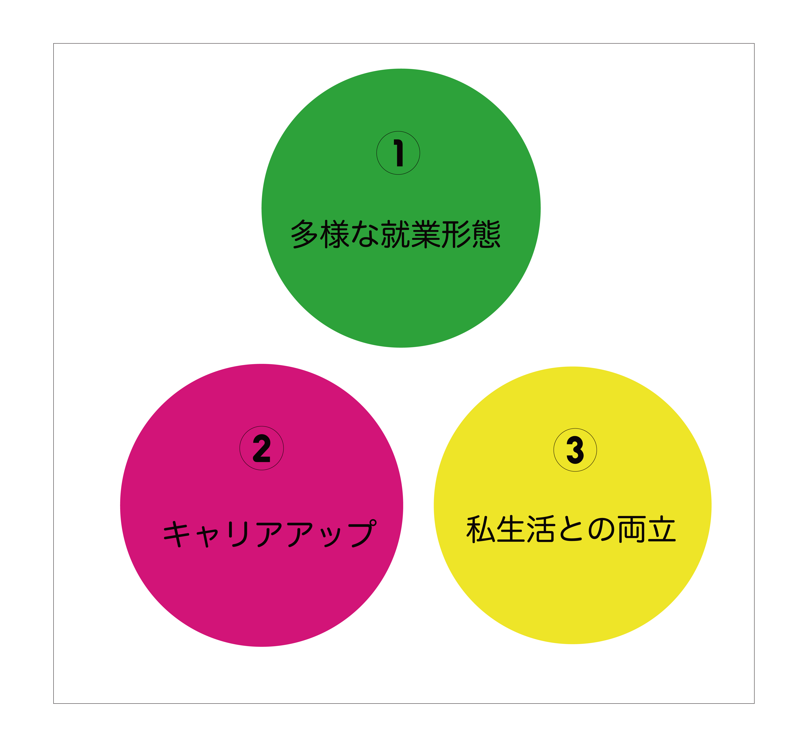
①多様な就業形態
当法人では、職員一人ひとりの違い（得意・不得意、能力、勤務時間（フルタイム・パートタイム）、夜勤の可否、モチベーション等）に合わせた役割が設定されています。法人のミッション達成のためには、それぞれ違う役割が調和しながら、統合されていくことが望ましいと考えています。具体的には下記のような職群、職位があります。
| 【主な職種】 | 支援スタッフ等 |
|---|
| 【職位】 | 一般2級 | 一般1級 | 現場リーダー | ケースワーカー2級 | ケースワーカー1級 |
|---|---|---|---|---|---|
| 主任2級 | 主任1級 | ソーシャルワーカー | マネージャー | 自律型ソーシャルワーカー |
| 【主な職種】 | 看護師 | 栄養士 | 事務職員 | 調理員 | 世話人 | 運転手 | その他 |
|---|
②キャリアアップ
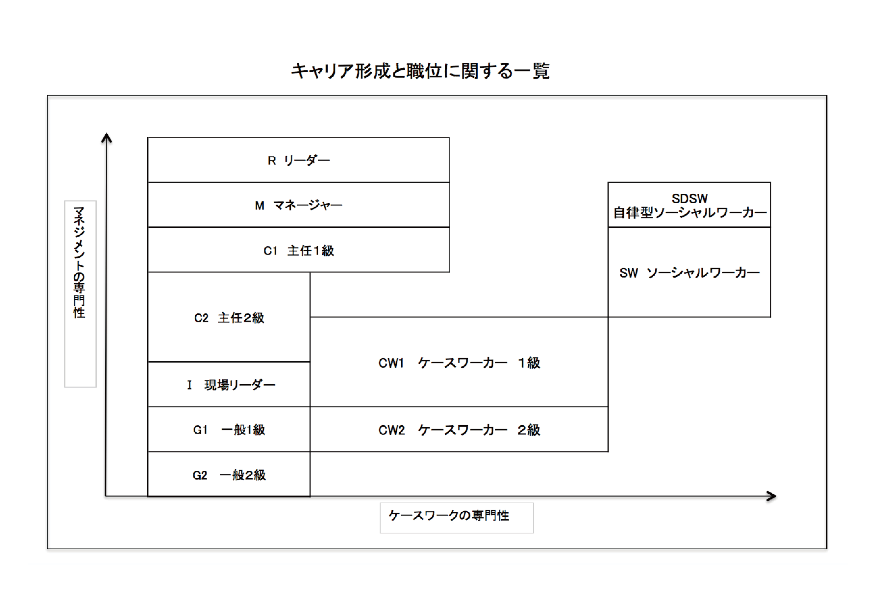
当法人では、キャリアアップして行くことを目指す人においては、どこまででもキャリアアップできる体制を整備しています。右の図をご覧ください。
採用が決まると、通常は一般２級もしくは一般１級として配属されることとなります。
方向性をあえて大きく２つに分けると、マネジメントの専門性を身につけていく方向と、ケースワーク（福祉援助技術）の専門性を身につけていく方向に分かれます。
マネジメントの専門性とは、サービス対象者の生活を守るため責任を持って事業を管理運営していく力であり、延長線上には新規の事業を立ち上げていくことも含まれます。
ケースワークの専門性とは、サービスの対象者の抱える生活上の課題を個別に改善していくための力を指します。
その両方の力を修めた人材を当法人では「自律型ソーシャルワーカー」と呼び、その育成に力を入れています。
自律型ソーシャルワーカーは、地域の社会課題を解決するために事業を起こし、自らを自律的に成長させながら組織管理をしていくことのできる人材です。リーダーがゼロからの創業者である当法人ならではの職位と言えるでしょう。
自律型ソーシャルワーカーを育成し、地域の社会課題にチーム全体で挑戦していく。それが、あーるどのアイデンティティです。なお、当法人の福祉はまちづくりですから、学生時代に福祉系の学科を先行していない学生・求職者においても積極的に採用を行なっております。専門分野に関わらず、様々な方にご活躍いただけます。
③私生活との両立
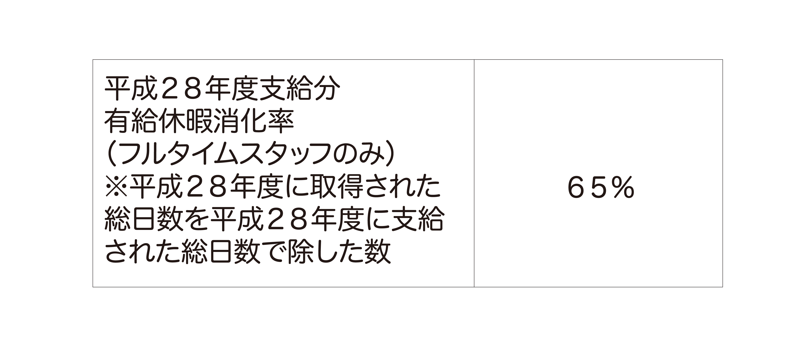
当法人では、豊かな私生活と仕事を両立できるよう、その体制について方針を立てています。
①OJT (オン ザ ジョブ トレーニング)

当法人では各事業を統括するマネージャーを配置し、必要に応じて業務の指導を行える体制を整えています。実際の場面で接し方や仕事の仕方を指導することによって、たいていの人は職務を果たせるようになります。
②OFF-JT (オフ ザ ジョブ トレーニング)
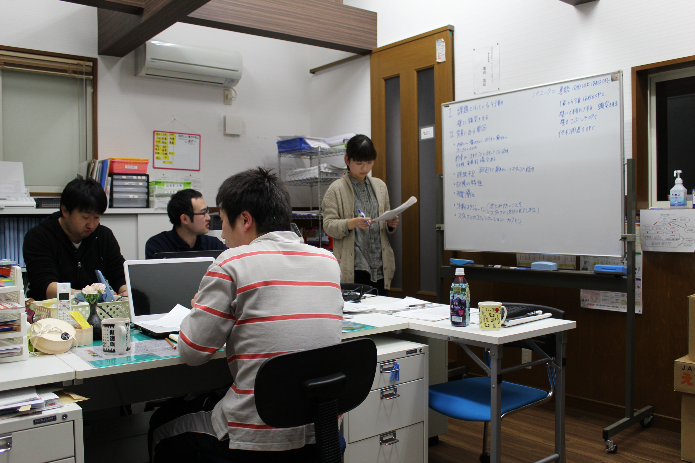
より高度な技術や知識を身に付けたい人には、社内研修の他、積極的に外部の研修等に参加させています。
③視察・海外研修
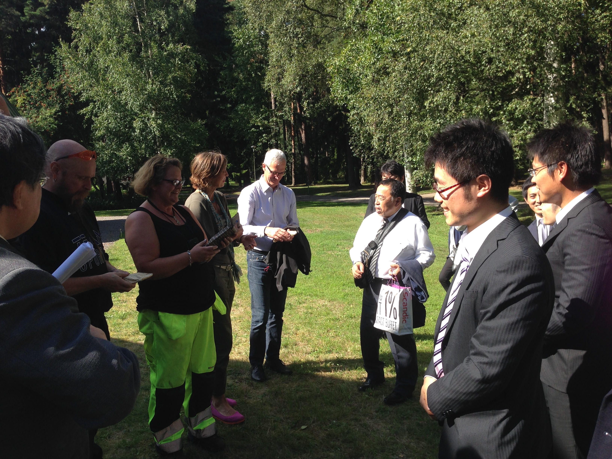
当法人では、同様の志を持つ団体が加盟する全国組織を通じて、積極的に職員を県外研修にも派遣しています。また、海外視察も人材育成の重点事業と位置づけ、必要に応じて職員を派遣しています。
④オリエンテーション・懇親会等
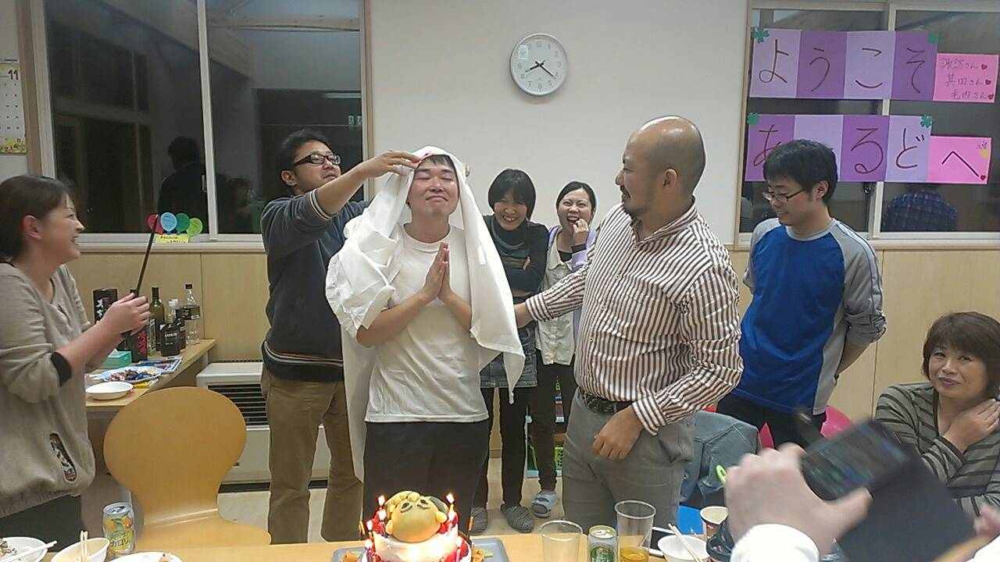
職員間の良好なコミュニケーションも、人材育成において重要な要素であることから、年に１回のオリエンテーションや２、３回の懇親会を法人活動として位置づけしています。

総勢４３人のスタッフは２０代〜３０代の若手が中心！ イベントの企画や研修も活発です
職員に長く勤めてもらうためには仕事の満足度だけでなくライフワークバランスも重要。２０１５年より計画有給制度を導入。上半期下半期で各期間最大５日間連続の休暇を取ることができます。スタッフそれぞれその使い方は自由。中にはJRの大人の休日倶楽部パスを利用し各駅停車の汽車に乗り、旅をするという素敵な過ごし方をするスタッフも。
代表が20代半ばで立ち上げたあーるどは、組織としては設立10年のまだ若い組織。建物でいうと基礎から作り上げてきたその過程が仕事への情熱やスタッフ全員でフォローし合う文化を形成し、新卒入社のスタッフの定着率も高い。
先輩社員紹介 -その1-
「独自で工夫できるところが、あーるどの魅力」
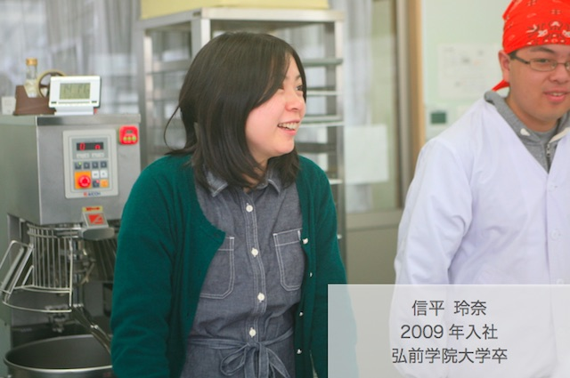
信平さんが福祉の仕事に興味を持ったきっかけは何ですか？
もともと小学校の先生になりたいと思っていたのですが、進路に迷った私に、高2の時の担任の先生が勧めてくれました。その時は既に担任ではなかったのに、わざわざ手紙をくれて、色々と情報をくれました。そこから障害児教育を調べて興味を持ちました。当時、周りの友人達の受験勉強オーラについていけず、それより自分はどんな仕事がしたいのか、ずっと考えていました。うまくいかないことの方が多く、自分の人生の中で苦しい時期でもありました。笑
そんな時、「たったひとつのたからもの」というダウン症の子を持つお母さんが綴った著書を友人から借りました。6歳で亡くなってしまうのですが、毎日を大切に、当たり前のことを大切に生きている姿に、なんだか力を貰ったというか。この子はこんなに頑張っているのに、自分は何をしているんだろうって。そこから、障害者支援に興味を持ち、教育ではなく、福祉の仕事がしたいという思いになりました。
信平さんが福祉の仕事に興味を持ったきっかけは何ですか？
大学に進み、知的障がい者の支援を主な活動とするボランティアサークルに所属しました。 まだ一般的に知られていなかった自閉症の人たちが支援対象でしたが、今ほど専門的な支援も確立されてはいなかったので、福祉施設のスタッフが集まる勉強会に支援方法や知識を得るために混じって参加していました。そこで大橋さんと出会い、あーるどを知りました。
当時まだ立ち上げて数年のあーるどは、未知数で、可能性が無限大な印象を受けました。同じ業務をするとしても、大きな組織の1人より、自分の頑張りがダイレクトに組織に貢献できる方が面白いかなと。みんなと同じ事をするのが単純に嫌だったのかもしれません。地域福祉に関する活動も展開していきたいという話だったので、それも大きかったと思います。 どういうことが出来るんだろうというワクワク感がありました。当時はよくわかってなかったですけど、他にはない施設になっていくんだろうなと。
実際働いてみて、既存事業をカバーしながら新事業を立ち上げるなど、大変だった時期もありましたが、上司のサポートで乗り越えることができました。大学卒業時、実は大手企業からも誘いはあったのですが、自分にはあーるどが向いていると思いました。型にはまった内容ではなく、独自で工夫できるところが魅力だと感じています。今でもあの時の選択は間違っていなかったと思います。
信平さんの現在の業務について教えて下さい。
特定の施設に所属することのない管理職として、人材育成を主な業務としています。普段は本部での事務や会議などのデスクワークが中心ですが、主任クラスからのヒアリングや新人育成、現場フォローのために各施設に出向くこともあります。事務所内は一部フリーアドレス制なので、子供たちの遊び場や会議室など、空いている場所にパソコンを持ち込んで仕事をすることもあったりします。
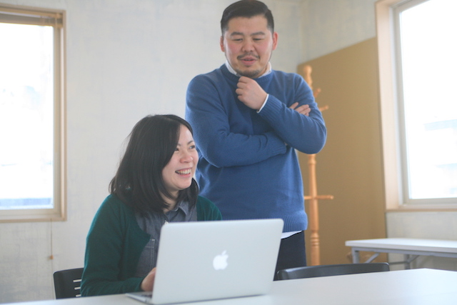
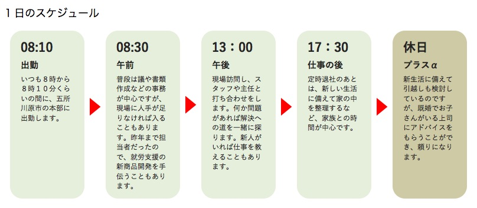
「結婚〜子育て〜安心して働き続けられる職場」
入社７年目の信平さんは育児休暇中。以前は出産後数か月で職場復帰するつもりでいたが、大橋の助言でしっかり休むことにしたそう。どんな助言があったのだろうか。
「大橋からは、ここでずっと働くことを考えるならば、休むべき時期はしっかりと休んだほうがいいと言われました。子供と過ごす時間も必要だと。私自身、妊娠してはじめて、子育てしながら働く人の気持ちや大変さが分かるようになり、施設利用者のご家族に対しても、今まで以上に寄り添えるようになったと思います。自分が家族を持つということで、誰かを深く思いやることができ、それは仕事にもつながりました。スタッフのみんなも私の体調を気遣ってくれますし、子どもができたことを喜んでくれています。産休・育休といった制度があるだけでなく、きちんと使えることも私自身が証明したい。あーるどには、出産後に職場復帰した女性スタッフはまだいませんが、若いスタッフのためにも私がそのロールモデルになりたいと思っています。」
こう語る信平さんに気負っている様子はなく、とても自然体だった。
育児休暇という期間で得たかけがえのない日々が信平さんを更にパワーアップさせ、その経験を元に仕事に従事してもらえる日を私たちは心待ちにしている。
先輩社員紹介 -その2-
「大好きな地元で働けること、 職場の明るい雰囲気が入社の決め手 」
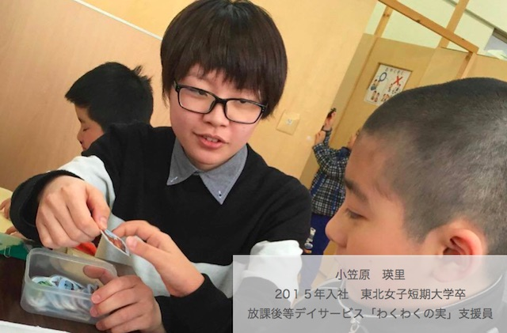
小笠原さんが福祉の仕事に興味を持ったきっかけは何ですか？
もともと子どもが大好きだったので、保育士になりたいと思っていました。保育士を目指す課程では保育だけでなく介護や福祉など人間福祉に関わることも広く浅く学びました。初めは保育以外のことに興味はなく、なぜ保育以外のことも学ばなくてはいけないのかとも感じていました。単位を取る必要があるから学んでいたという感じでしたが、学んでいくうちに身近にも障害を持った方がいたこともあり、少しずつ福祉についても興味が出てきました。
短大の１学年のとき障害者施設での実習がありました。自閉症の利用者さんと関わる機会があり、ちょっとした配慮不足でパニックにさせてしまったことがありました。周囲の状況を判断し、上手く配慮できれば、パニックを回避できたかもしれない。本人に辛い思いをさせずに済んだのではないかと感じました。この実習がきっかけで障害を持つ人がどうしたら幸せになれるのか、自分はどうすればいいのかを深く考えるようになりました。
小笠原さんはなぜあーるどに就職することを決めましたか？
学生時代の経験から、障がい児・者の現場で働きたいと思うようになり、いろいろ調べているうちに、児童デイサービスという福祉サービスがあることを知りました。また、地元での就職を希望していたので、五所川原で働けることを前提に福祉事業所を調べてあーるどにたどり着きました。どこが大手でどこが小さくて、といった情報は特に持っていませんでしたが、ホームページからも伝わってくる職場の明るい雰囲気が魅力に感じました。
五所川原はねぷた祭りに象徴されるように、明るくて心の熱い人が多い町です。地元が大好きなので、あーるどに決めてよかったと思います。この町を良くしたいと将来を見据えて事業に取り組んでいることも、他にはない特徴だと思っています。
小笠原さんの現在の業務について教えて下さい。
現在の主な勤務先は五所川原市にある「びーた支援センター」で、未就学児童を対象とした支援業務にあたっています。午後は児童デイサービス事業所である「わくわくの実」で小学生から高校生まで一緒に遊びながら、彼らの集団での過ごし方や問題解決の方法をサポートしています。
現在の仕事についてどう感じていますか？
今の現場には満足しています。最近、支援している児童の親御さんとも話ができるようになり、自宅での様子を知ることで児童への理解を深められるようになりました。この仕事は利用者さんから学ぶことも多いです。
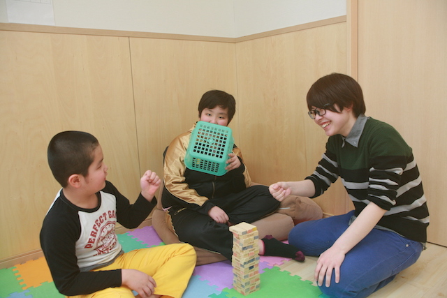
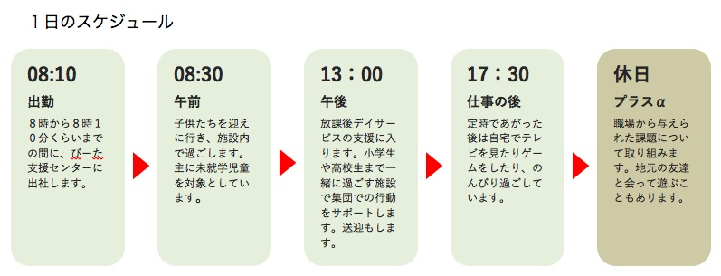